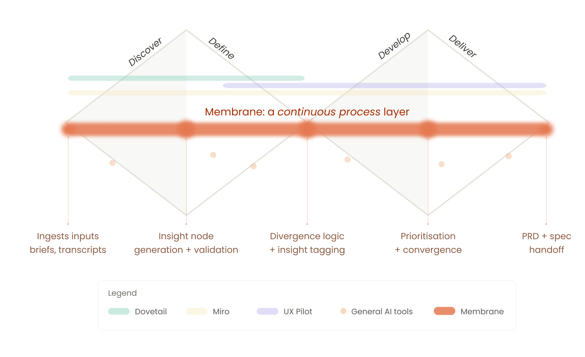

Research gets done.
Then it disappears.
As AI embeds itself in UX workflows, role boundaries are collapsing — designers research, PMs design, researchers ship. The consequence is lost decision traceability: insights get disconnected from the decisions they should inform, and the first viable concept gets pursued without sufficient grounding in evidence.
Existing tools address parts of this. Dovetail structures qualitative data, Miro supports collaboration, UX Pilot accelerates output. None maintain continuity across the full workflow. The insights exist. The connections don't.

Membrane spans the full double diamond. Competitors cover partial phases — none maintain continuity across all four.